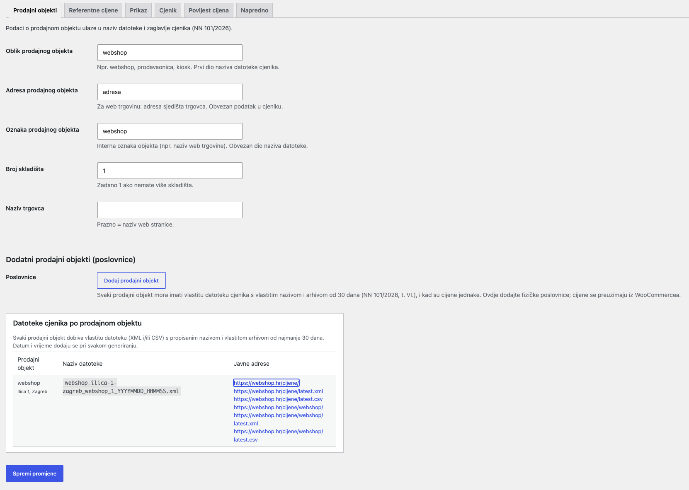
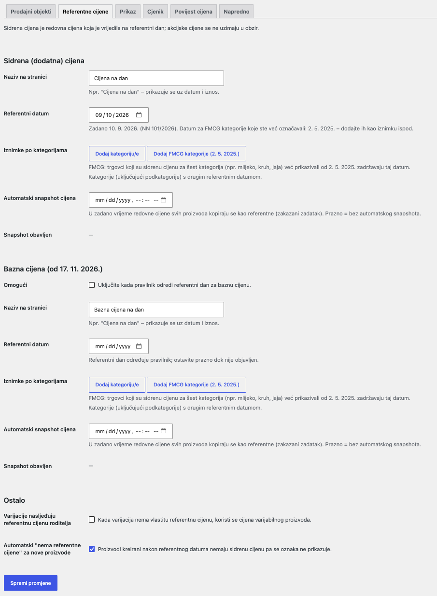
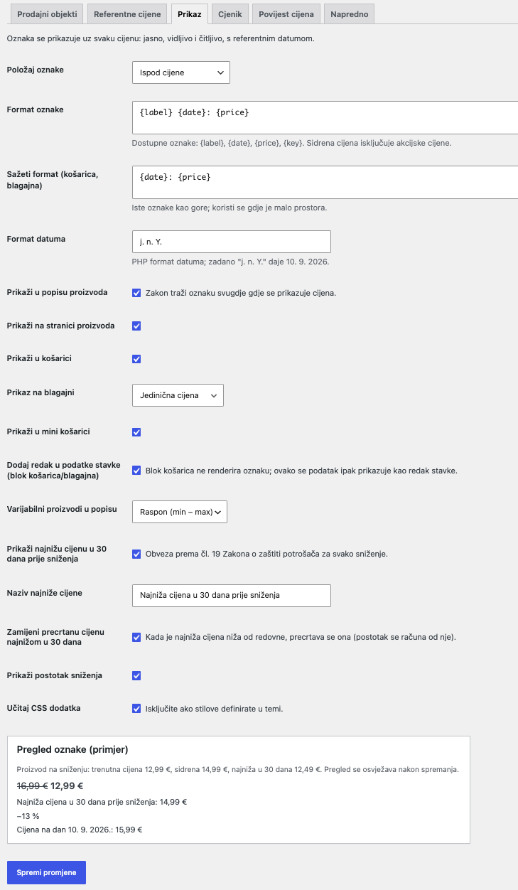
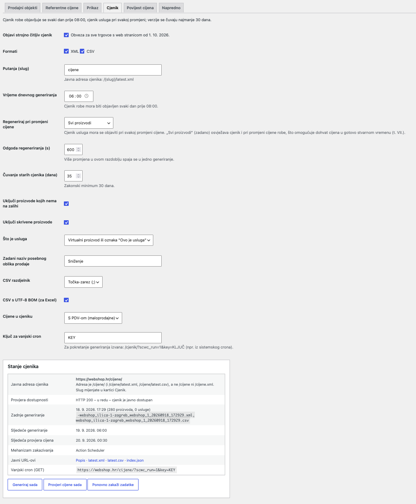
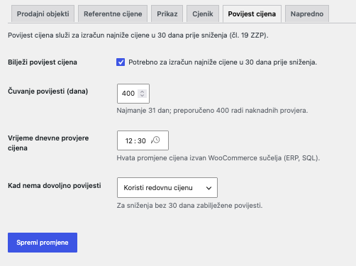
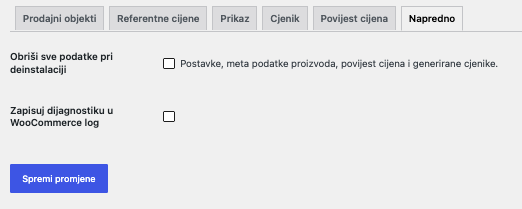
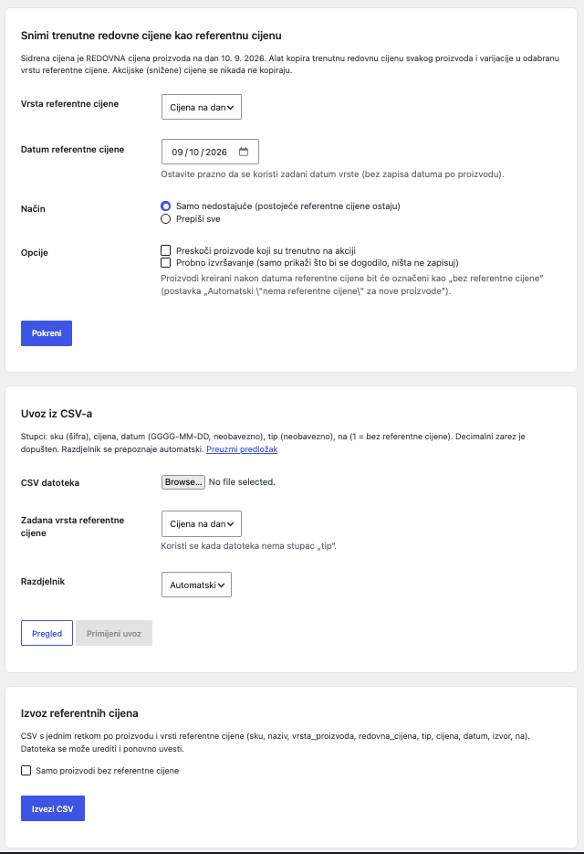

„Sidrena cijena za WooCommerce” je dodatak (plugin) koji vašem webshopu dodaje tri stvari koje hrvatski propisi traže od 1. listopada 2026.:
Vlada Republike Hrvatske objavila je 11. 9. 2026. u Narodnim novinama br. 101/2026 Odluku o isticanju dodatne cijene. Od 1. 10. 2026. svaki trgovac i pružatelj usluga mora uz svaku cijenu – i na web stranicama – istaknuti „dodatnu (sidrenu) cijenu”. To je redovna cijena koja je za taj proizvod ili uslugu vrijedila na dan 10. 9. 2026., bez posebnih oblika prodaje (bez akcija, sniženja, rasprodaja).
Iznimka: trgovci koji su sidrenu cijenu već isticali za kategorije hrana, piće, kozmetika, sredstva za čišćenje, toaletne potrepštine i proizvodi za kućanstvo za te kategorije zadržavaju stari referentni dan 2. 5. 2025.
Ista Narodne novine sadrže i Odluku o objavi cjenika. Ona traži da trgovac na svojoj web stranici objavi strojno čitljiv cjenik u XML ili CSV obliku:
Za vrijeme svakog sniženja trgovac mora istaknuti najnižu cijenu koju je primjenjivao u 30 dana prije sniženja, a postotak popusta računa se iz te cijene (ne iz redovne). Od 17. 11. 2026. uvodi se i trajna „bazna cijena”; pravilnik koji određuje njezin referentni dan još nije objavljen. Dodatak za to već ima pripremljenu drugu vrstu referentne cijene (v. poglavlje 3.2).
Prema čl. 20 Zakona o iznimnim mjerama kontrole cijena, za nepoštivanje ovih obveza predviđene su novčane kazne: za trgovačka društva 3.000 – 30.000 €, za obrte 1.000 – 20.000 €, a za trgovce fizičke osobe 1.000 – 6.000 €. Inspekcija može i privremeno zabraniti prodaju.
| Datum | Što se događa | Što trebate napraviti |
|---|---|---|
| 10. 9. 2026. | Referentni dan za sidrenu cijenu | Sačuvajte dokaz redovnih cijena toga dana (izvoz, snimka zaslona, cjenik). |
| 1. 10. 2026. | Stupa na snagu obveza isticanja sidrene cijene i objave cjenika | Dodatak instaliran, sidrene cijene snimljene, cjenik dostupan na /cjenik/. |
| 17. 11. 2026. | Počinje obveza „bazne cijene” (pravilnik u pripremi) | Kad pravilnik odredi datum: uključite „Bazna cijena” u postavkama i snimite cijene. |
| Komponenta | Najmanja verzija | Napomena |
|---|---|---|
| PHP | 8.1 | Dodatak se ne pokreće na starijem PHP-u; u administraciji se prikazuje poruka o grešci. |
| WordPress | 6.4 | Testirano do 6.8. |
| WooCommerce | 9.0 | Testirano do 9.9. Za barkod u cjeniku preporučuje se 9.2+ (ugrađeno polje GTIN/EAN), za marku 9.6+ (ugrađene marke). |
Dodatak je kompatibilan s HPOS-om (High-Performance Order Storage) i s blokovskom košaricom/blagajnom.
wp-content/plugins/. Paket već sadrži mapu vendor/; ako ona nedostaje, administracija prikazuje poruku „nedostaje vendor/autoload.php”.{prefiks}scwc_price_history).Stranica postavki nalazi se u izborniku WooCommerce → Sidrena cijena (naslov stranice: „Sidrena cijena za WooCommerce”). Podijeljena je u šest kartica: Prodajni objekti, Referentne cijene, Prikaz, Cjenik, Povijest cijena, Napredno. Svaka kartica ima vlastiti gumb „Spremi promjene”; spremanje jedne kartice ne mijenja ostale. Za pristup je potrebna ovlast upravljanja WooCommerceom (uloga Administrator ili Upravitelj trgovine).

Uvodni tekst kartice: „Podaci o prodajnom objektu ulaze u naziv datoteke i zaglavlje cjenika (NN 101/2026).”
| Polje | Što znači | Zadano | Preporuka |
|---|---|---|---|
| Oblik prodajnog objekta | Vrsta objekta: npr. webshop, prodavaonica, kiosk. Prvi dio naziva datoteke cjenika. | webshop | Za web trgovinu ostavite „webshop”. |
| Adresa prodajnog objekta | Za web trgovinu: adresa sjedišta trgovca. Obvezan podatak u cjeniku i drugi dio naziva datoteke. | prazno | Upišite punu adresu, npr. „Ilica 1, 10000 Zagreb”. Bez adrese cjenik se ne može generirati. |
| Oznaka prodajnog objekta | Interna oznaka objekta (npr. naziv web trgovine). Obvezan dio naziva datoteke. Iz oznake se izvodi i trajni ključ objekta koji se koristi u adresama (/cjenik/{ključ}/). | prazno | Kratka oznaka bez posebnih znakova, npr. „Web1”. Kasnije preimenovanje ne gubi arhivu (ključ ostaje). |
| Broj pohrane | „Broj pohrane” iz Odluke; četvrti dio naziva datoteke. | 1 | Ostavite 1 ako nemate više skladišta. |
| Naziv trgovca | Naziv koji se upisuje u zaglavlje cjenika i na javnu stranicu popisa. | prazno = naziv web stranice | Upišite službeni naziv tvrtke/obrta. |
Ispod osnovnih polja nalazi se odjeljak „Dodatni prodajni objekti (poslovnice)” s opisom: „Svaki prodajni objekt mora imati vlastitu datoteku cjenika s vlastitim nazivom i arhivom od 30 dana (NN 101/2026, t. VI.), i kad su cijene jednake. Ovdje dodajte fizičke poslovnice; cijene se preuzimaju iz WooCommercea.”
Gumb „Dodaj prodajni objekt” dodaje redak s poljima:
| Polje u retku | Zadano | Napomena |
|---|---|---|
| Oblik (npr. poslovnica, prodavaonica, kiosk) | poslovnica | |
| Adresa | prazno | Obvezno – redak bez adrese se pri spremanju odbacuje. |
| Oznaka prodajnog objekta | prazno | Obvezno – redak bez oznake se pri spremanju odbacuje. |
| Broj pohrane | 1 |
Svaki redak ima poveznicu „Ukloni”. Svaka poslovnica dobiva vlastitu datoteku, arhivu i adrese /cjenik/{ključ}/latest.xml i /cjenik/{ključ}/latest.csv. Cijene u datotekama poslovnica jednake su cijenama webshopa.
Na dnu kartice prikazuje se tablica s opisom „Svaki prodajni objekt dobiva vlastitu datoteku (XML i/ili CSV) s propisanim nazivom i vlastitom arhivom od najmanje 30 dana. Datum i vrijeme dodaju se pri svakom generiranju.” Stupci:
| Prodajni objekt | Naziv datoteke | Javne adrese |
|---|---|---|
| Web1 webshop · Ilica 1, 10000 Zagreb | webshop_ilica-1-10000-zagreb_web1_1_YYYYMMDD_HHMMSS.xml | https://vasa-trgovina.hr/cjenik/ …/cjenik/latest.xml …/cjenik/latest.csv …/cjenik/web1/ …/cjenik/web1/latest.xml …/cjenik/web1/latest.csv |
| Poslovnica Split poslovnica · Riva 5, 21000 Split | poslovnica_riva-5-21000-split_poslovnica-split_1_YYYYMMDD_HHMMSS.xml | …/cjenik/poslovnica-split/ …/cjenik/poslovnica-split/latest.xml …/cjenik/poslovnica-split/latest.csv |
Pregled se osvježava nakon spremanja. Dijelovi naziva pretvaraju se u mala slova bez dijakritike; razmaci, zarezi i ostali znakovi postaju crtica. Prazan dio zamjenjuje se s na.

Uvodni tekst: „Sidrena cijena je redovna cijena koja je vrijedila na referentni dan; akcijske cijene se ne uzimaju u obzir.”
Kartica ima tri odjeljka: Sidrena (dodatna) cijena, Bazna cijena (od 17. 11. 2026.) i Ostalo.
| Polje | Što znači | Zadano | Preporuka |
|---|---|---|---|
| Naziv na stranici | Tekst koji kupac vidi uz datum i iznos, npr. „Cijena na dan”. | Cijena na dan | Zadani naziv je jasan; može i „Sidrena cijena”. |
| Referentni datum | Dan na koji se odnosi sidrena cijena. Opis polja: „Zadano 10. 9. 2026. (NN 101/2026). Datum za FMCG kategorije koje ste već označavali: 2. 5. 2025. – dodajte ih kao iznimku ispod.” | 2026-09-10 | Ne mijenjajte. |
| Iznimke po kategorijama | Kategorije (uključujući podkategorije) s drugim referentnim datumom. Svaki redak ima višestruki odabir kategorija, polje datuma i poveznicu „Ukloni”. Gumbi: „Dodaj kategoriju/e” (prazan redak) i „Dodaj FMCG kategorije (2. 5. 2025.)” (redak s već upisanim datumom 2. 5. 2025. – kategorije birate sami). | bez iznimaka | Koristite samo ako ste za hranu, piće, kozmetiku, sredstva za čišćenje, toaletne potrepštine i proizvode za kućanstvo sidrenu cijenu već isticali od 2. 5. 2025. Redak bez odabrane kategorije ili bez datuma se pri spremanju odbacuje. |
| Automatski snapshot cijena | Datum i vrijeme u koje će se redovne cijene svih proizvoda automatski kopirati kao referentne (zakazani zadatak). Prazno = bez automatskog snapshota. Snapshot radi u načinu „samo nedostajuće”. | prazno | Korisno ako želite snimiti cijene unaprijed određenog dana (npr. u noći nakon referentnog dana). |
| Snapshot obavljen | Samo za čitanje: prikazuje vrijeme zakazanog snapshota koji je izvršen (ili „—”). | — |
| Polje | Što znači | Zadano | Preporuka |
|---|---|---|---|
| Omogući | Uključuje drugu vrstu referentne cijene. Opis: „Uključite kada pravilnik odredi referentni dan za baznu cijenu.” Kad je uključena, u cjeniku se pojavljuju dodatna polja (BaznaCijena u XML-u, bazna_cijena u CSV-u), na proizvodima dodatna polja, a na stranici druga oznaka. | isključeno | Ostavite isključeno dok pravilnik nije objavljen. |
| Naziv na stranici | Tekst oznake. | Bazna cijena na dan | |
| Referentni datum | Opis: „Referentni dan određuje pravilnik; ostavite prazno dok nije objavljen.” | prazno | |
| Iznimke po kategorijama / Automatski snapshot cijena / Snapshot obavljen | Isto kao kod sidrene cijene. | prazno |
| Polje | Što znači | Zadano | Preporuka |
|---|---|---|---|
| Varijacije nasljeđuju referentnu cijenu roditelja | Kada varijacija nema vlastitu referentnu cijenu, koristi se cijena varijabilnog proizvoda (upisana na roditelju). | isključeno | Uključite samo ako sve varijacije nekog proizvoda imaju istu sidrenu cijenu i želite je upisati jednom na roditelju. |
| Automatski „nema referentne cijene” za nove proizvode | Proizvodi kreirani nakon referentnog datuma nemaju sidrenu cijenu pa se oznaka ne prikazuje. Alat za snimanje takve proizvode označava kao „bez referentne cijene”. | uključeno | Ostavite uključeno. |

Uvodni tekst: „Oznaka se prikazuje uz svaku cijenu: jasno, vidljivo i čitljivo, s referentnim datumom.”
| Polje | Što znači | Zadano | Preporuka |
|---|---|---|---|
| Položaj oznake | Gdje se oznaka smješta u odnosu na cijenu: Iza cijene (isti redak), Ispod cijene, Ispred cijene. | Iza cijene (isti redak) | Ako je tema uska, „Ispod cijene” je čitljivije. |
| Format oznake | Predložak teksta. Dostupne oznake: {label} (naziv), {date} (datum), {price} (iznos), {key} (ključ vrste). Sidrena cijena isključuje akcijske cijene. | {label} {date}: {price}→ „Cijena na dan 10. 9. 2026.: 14,99 €” | Zadržite datum – zakon traži da bude vidljiv. |
| Sažeti format (košarica, blagajna) | Iste oznake kao gore; koristi se u košarici, mini-košarici i na blagajni gdje je malo prostora. | {date}: {price} | |
| Format datuma | PHP format datuma; zadano „j. n. Y.” daje 10. 9. 2026. | j. n. Y. | Ne mijenjajte. |
| Prikaži u popisu proizvoda | Oznaka na stranicama kategorija, pretrage, povezanih proizvoda itd. Opis: „Zakon traži oznaku svugdje gdje se prikazuje cijena.” | uključeno | Ostavite uključeno. |
| Prikaži na stranici proizvoda | Oznaka na pojedinačnoj stranici proizvoda. | uključeno | Ostavite uključeno. |
| Prikaži u košarici | Oznaka uz jediničnu cijenu u klasičnoj košarici. | uključeno | Ostavite uključeno. |
| Prikaz na blagajni | Jedinična cijena (sidrena cijena po komadu), Ukupno za količinu (pomnoženo količinom) ili Ne prikazuj. Odnosi se na pregled narudžbe na klasičnoj blagajni. | Jedinična cijena | |
| Prikaži u mini košarici | Oznaka u padajućoj mini-košarici (widget). | uključeno | |
| Dodaj redak u podatke stavke (blok košarica/blagajna) | Opis: „Blok košarica ne renderira oznaku; ovako se podatak ipak prikazuje kao redak stavke.” Redak ima naziv „Cijena na dan 10. 9. 2026.” i iznos; za vrijeme sniženja dodaje se i redak s najnižom cijenom u 30 dana. | uključeno | Ostavite uključeno ako koristite blokovsku košaricu. |
| Varijabilni proizvodi u popisu | Za varijabilni proizvod u popisu: Raspon (min – max) sidrenih cijena varijacija ili Ne prikazuj. Na stranici proizvoda oznaka se nakon odabira varijacije uvijek zamjenjuje oznakom te varijacije. | Raspon (min – max) | |
| Prikaži najnižu cijenu u 30 dana prije sniženja | Opis: „Obveza prema čl. 19 Zakona o zaštiti potrošača za svako sniženje.” | uključeno | Ostavite uključeno. |
| Naziv najniže cijene | Tekst ispred iznosa. | Najniža cijena u 30 dana prije sniženja | |
| Zamijeni precrtanu cijenu najnižom u 30 dana | Opis: „Kada je najniža cijena niža od redovne, precrtava se ona (postotak se računa od nje).” Ne primjenjuje se na raspon varijabilnog proizvoda. | uključeno | Ostavite uključeno – tako precrtana cijena i postotak odgovaraju zakonu. |
| Prikaži postotak sniženja | Prikazuje npr. „−23 %” izračunato iz najniže cijene u 30 dana, zaokruženo na niže. | uključeno | |
| Učitaj CSS dodatka | Opis: „Isključite ako stilove definirate u temi.” | uključeno |
Ispod polja prikazuje se primjer oznake za proizvod na sniženju: „trenutna cijena 12,99 €, sidrena 15,99 €, najniža u 30 dana 14,99 €, popust −13 %”. Pregled se osvježava nakon spremanja i pokazuje kako će oznaka izgledati s vašim formatom i nazivima.

Uvodni tekst: „Cjenik robe objavljuje se svaki dan prije 08:00, cjenik usluga pri svakoj promjeni; verzije se čuvaju najmanje 30 dana.”
| Polje | Što znači | Zadano | Preporuka |
|---|---|---|---|
| Objavi strojno čitljiv cjenik | Glavni prekidač. Opis: „Obveza za sve trgovce s web stranicom od 1. 10. 2026.” Kad je isključen, adrese /cjenik/… vraćaju 404 i zadaci se ne zakazuju. | uključeno | Ostavite uključeno. |
| Formati | XML i/ili CSV. Za svaki prodajni objekt generira se po jedna datoteka po formatu. | XML i CSV | Ostavite oba – zakon dopušta jedno ili drugo, a usporednici cijena često traže XML. |
| Putanja (slug) | Dio adrese iza domene. Opis: „Javna adresa cjenika: /{slug}/latest.xml”. Nakon promjene dodatak sam osvježava pravila trajnih veza. | cjenik | Ne mijenjajte; adresa /cjenik/ je očekivana. |
| Vrijeme dnevnog generiranja | Sat i minuta (po vremenskoj zoni trgovine) dnevnog generiranja. Opis: „Cjenik robe mora biti objavljen svaki dan prije 08:00.” Ako upišete vrijeme nakon 07:30, administracija prikazuje upozorenje. | 06:00 | Ostavite 06:00 – ostavlja dva sata rezerve za kašnjenje crona. |
| Regeneriraj pri promjeni cijene | Samo usluge, Svi proizvodi ili Nikad (samo dnevno). Opis: „Cjenik usluga mora se objaviti pri svakoj promjeni cijene. ‚Svi proizvodi’ (zadano) osvježava cjenik i pri promjeni cijene robe, što omogućuje dohvat cijena u gotovo stvarnom vremenu (t. VII.).” | Svi proizvodi | Ostavite „Svi proizvodi”. „Nikad” je dopušteno samo ako nemate usluge. |
| Odgoda regeneriranja (s) | Opis: „Više promjena u ovom razdoblju spaja se u jedno generiranje.” Promjena napravljena prije 08:00 objavljuje se odmah ako bi je odgoda gurnula preko 07:55. | 600 (10 min) | Za velike kataloge ostavite 600 ili više. |
| Čuvanje starih cjenika (dana) | Opis: „Zakonski minimum 30 dana.” Manje od 30 nije moguće upisati. Najnovija datoteka svakog objekta i formata nikad se ne briše. | 35 | 35 ili više. |
| Uključi proizvode kojih nema na zalihi | Proizvodi sa statusom „nema na zalihi” ulaze u cjenik s dostupnošću „nedostupno”. | uključeno | Ostavite uključeno – Odluka predviđa polje dostupno/nedostupno. |
| Uključi skrivene proizvode | Proizvodi s vidljivošću „skriveno” (dostupni izravnim linkom) ulaze u cjenik. | uključeno | Ostavite uključeno – i skriveni proizvodi se prodaju. |
| Što je usluga | Pravilo po kojem se proizvod svrstava u odjeljak „Usluge”: Virtualni proizvod ili oznaka „Ovo je usluga”, Samo virtualni proizvodi, Samo oznaka „Ovo je usluga”, Svi proizvodi su usluge, Nema usluga. | Virtualni proizvod ili oznaka „Ovo je usluga” | Ako prodajete virtualne proizvode koji nisu usluge (npr. e-knjige), odaberite „Samo oznaka”. |
| Zadani naziv posebnog oblika prodaje | Naziv koji se upisuje u cjenik za proizvode na akciji koji nemaju vlastiti naziv (polje na proizvodu). | Sniženje | |
| CSV razdjelnik | Točka-zarez (;), Zarez (,) ili Tabulator. | Točka-zarez (;) | Ostavite „;” – standard za hrvatski Excel. |
| CSV s UTF-8 BOM (za Excel) | Dodaje oznaku kodiranja da Excel ispravno prikaže č, ć, š, ž, đ. | uključeno | |
| Cijene u cjeniku | S PDV-om (maloprodajne) ili Bez PDV-a. | S PDV-om | Ostavite „S PDV-om” – Odluka traži maloprodajne cijene. |
| Ključ za vanjski cron | Tajni ključ za pokretanje generiranja izvana. Opis: „Za pokretanje generiranja izvana: /cjenik/?scwc_run=1&key=KLJUČ (npr. iz sistemskog crona).” Generira se automatski. | automatski 32 znaka | Ne dijelite ključ javno. Ako ga obrišete i spremite, generira se novi. |
Ispod polja nalazi se okvir „Stanje cjenika” s redcima:
| Redak | Sadržaj |
|---|---|
| Zadnje generiranje | „nikad” ili datum i vrijeme, broj proizvoda i usluga te nazivi generiranih datoteka. Ako zadnje generiranje nije uspjelo, poruka greške prikazuje se crveno. |
| Sljedeće generiranje | Datum i vrijeme sljedećeg dnevnog generiranja ili „nije zakazano”. |
| Sljedeća provjera cijena | Sljedeći termin dnevne provjere povijesti cijena ili „nije zakazano”. |
| Zakazano automatsko snimanje | Prikazuje se samo ako je u kartici Referentne cijene zakazan automatski snapshot. |
| Mehanizam zakazivanja | „Action Scheduler” ili „WP-Cron”. |
| Javni URL-ovi | Poveznice: Popis · latest.xml · latest.csv · index.json. |
| Po prodajnom objektu | Prikazuje se kad postoji više prodajnih objekata: za svaki latest.xml i latest.csv. |
| Vanjski cron (GET) | Gotova adresa https://vasa-trgovina.hr/cjenik/?scwc_run=1&key=… za kopiranje u vanjski cron. |
Gumbi ispod tablice:

Uvodni tekst: „Povijest cijena služi za izračun najniže cijene u 30 dana prije sniženja (čl. 19 ZZP).”
| Polje | Što znači | Zadano | Preporuka |
|---|---|---|---|
| Bilježi povijest cijena | Opis: „Potrebno za izračun najniže cijene u 30 dana prije sniženja.” Kad je isključeno, promjene cijena se ne bilježe i najniža cijena se ne može prikazati. | uključeno | Ostavite uključeno. |
| Čuvanje povijesti (dana) | Opis: „Najmanje 31 dan; preporučeno 400 radi naknadnih provjera.” Stariji zapisi brišu se automatski (zadnji zapis svakog proizvoda uvijek ostaje). | 400 | 400 – omogućuje dokazivanje cijena unatrag više od godine dana. |
| Vrijeme dnevne provjere cijena | Opis: „Hvata promjene cijena izvan WooCommerce sučelja (ERP, SQL).” Provjera bilježi i akcije koje su počele/završile po datumu. Promjene otkrivene provjerom također pokreću osvježavanje cjenika. | 00:30 | Ostavite 00:30 (prije dnevnog generiranja). |
| Kad nema dovoljno povijesti | Opis: „Za sniženja bez 30 dana zabilježene povijesti.” Koristi redovnu cijenu ili Ne prikazuj najnižu cijenu. Odnosi se na prvih 30 dana nakon instalacije. | Koristi redovnu cijenu | „Koristi redovnu cijenu” je ispravno ako niste imali akcije u 30 dana prije instalacije; inače odaberite „Ne prikazuj” i cijene upišite ručno. |

| Polje | Što znači | Zadano | Preporuka |
|---|---|---|---|
| Obriši sve podatke pri deinstalaciji | Opis: „Postavke, meta podatke proizvoda, povijest cijena i generirane cjenike.” Primjenjuje se samo pri brisanju dodatka, ne pri deaktivaciji. | isključeno | Ostavite isključeno dok traje obveza čuvanja 30 dana. |
| Zapisuj dijagnostiku u WooCommerce log | Dodatne poruke u WooCommerce → Status → Zapisnici. | isključeno | Uključite samo na zahtjev podrške. |
Stranica WooCommerce → Sidrena cijena – Alati sadrži tri kartice: snimanje trenutnih cijena, uvoz iz CSV-a i izvoz. Sve radnje izvršavaju se u pozadini u dijelovima (po 100 proizvoda), pa rade i na velikim katalozima; napredak vidite u traci i dnevniku na stranici.

Tekst na stranici: „Sidrena cijena je REDOVNA cijena proizvoda na dan 10. 9. 2026. Alat kopira trenutnu redovnu cijenu svakog proizvoda i varijacije u odabranu vrstu referentne cijene. Akcijske (snižene) cijene se nikada ne kopiraju.”
| Polje | Što radi |
|---|---|
| Vrsta referentne cijene | Odabir vrste: „Cijena na dan” (sidrena) ili, ako je uključena, „Bazna cijena na dan”. |
| Datum referentne cijene | Zadano popunjen datumom vrste (10. 9. 2026.). Opis: „Ostavite prazno da se koristi zadani datum vrste (bez zapisa datuma po proizvodu).” Ako upišete datum jednak zadanom, on se ne zapisuje na proizvod, pa kasnija promjena zadanog datuma u postavkama vrijedi i za te proizvode. Drukčiji datum zapisuje se na svaki proizvod. |
| Način: Samo nedostajuće (postojeće referentne cijene ostaju) | Zadano. Preskače proizvode koji već imaju sidrenu cijenu ili oznaku „nema referentne cijene” (u dnevniku: „preskočeno – već postoji”). Sigurno za ponovno pokretanje. |
| Način: Prepiši sve | Zapisuje novu vrijednost svim proizvodima, uključujući one koje ste ručno unijeli ili uvezli. Koristite oprezno. |
| Opcija: Preskoči proizvode koji su trenutno na akciji | Proizvodi na akciji se preskaču („preskočeno – na akciji”). Bez ove opcije i za proizvod na akciji kopira se njegova redovna (ne akcijska) cijena, što je obično ispravno. |
| Opcija: Probno izvršavanje (samo prikaži što bi se dogodilo, ništa ne zapisuj) | Prolazi kroz sve proizvode i prikazuje brojeve i primjere, ali ništa ne mijenja. Dnevnik dobiva oznaku „(probno – ništa nije zapisano)”. |
Ako je u postavkama uključeno „Automatski ‚nema referentne cijene’ za nove proizvode”, ispod opcija stoji napomena da će proizvodi kreirani nakon datuma referentne cijene biti označeni kao „bez referentne cijene”.
| Radnja u dnevniku | Kada |
|---|---|
| zapisano | Redovna cijena kopirana kao sidrena; izvor na proizvodu: „snapshot”. |
| preskočeno – već postoji | Način „Samo nedostajuće” i proizvod već ima sidrenu cijenu ili oznaku „nema referentne cijene”. |
| označeno – bez referentne cijene | Proizvod je kreiran nakon referentnog datuma (po datumu kreiranja u WooCommerceu) i postavka „Automatski ‚nema referentne cijene’ za nove proizvode” je uključena. Na proizvodu se postavlja kvačica „Nema referentne cijene”; kupac vidi samo aktualnu cijenu. |
| preskočeno – bez cijene | Proizvod nema redovnu cijenu (prazna ili 0). Ništa se ne zapisuje. |
| preskočeno – na akciji | Uključena opcija „Preskoči proizvode koji su trenutno na akciji”. |
Alat obrađuje jednostavne proizvode, varijacije i vanjske (affiliate) proizvode. Varijabilni i grupirani „roditelji” se preskaču – sidrena cijena pripada svakoj varijaciji.
Tekst na stranici: „Stupci: sku (šifra), cijena, datum (GGGG-MM-DD, neobavezno), tip (neobavezno), na (1 = bez referentne cijene). Decimalni zarez je dopušten. Razdjelnik se prepoznaje automatski.” Poveznica „Preuzmi predložak” preuzima datoteku sidrene-cijene-predlozak.csv.
Prvi redak je zaglavlje. Nazivi stupaca prepoznaju se bez obzira na velika/mala slova i dijakritiku (npr. „Šifra” = „sifra”). Prihvaćeni nazivi:
| Podatak | Obvezno | Prihvaćeni nazivi stupca | Sadržaj |
|---|---|---|---|
| Šifra proizvoda | da | sku, sifra, šifra, code | SKU proizvoda ili varijacije točno kako je upisan u WooCommerceu. |
| Iznos | da (osim kad je na = 1) | cijena, price, sidrena_cijena, anchor, referentna_cijena, iznos | Redovna cijena na referentni dan, veća od 0. Dopušten je decimalni zarez (19,99) i točka (19.99); simbol valute se zanemaruje. |
| Datum | ne | datum, date | Referentni datum za taj proizvod u obliku GGGG-MM-DD (npr. 2026-09-10). Prazno = zadani datum vrste. |
| Vrsta | ne | tip, type, key, vrsta | anchor (sidrena) ili base (bazna). Prazno = vrsta odabrana u obrascu. |
| Bez referentne cijene | ne | na, nema, bez_cijene | 1, da ili yes = proizvod se označava „nema referentne cijene”; iznos se tada ne traži. |
Primjer datoteke (razdjelnik „;”, kakav daje i predložak):
sku;cijena;datum;tip ABC-001;19,99;2026-09-10;anchor ABC-002;149,00;;anchor ABC-003;;;anchor
Treći redak bez iznosa javit će grešku „Neispravan iznos”; ako proizvod nema sidrenu cijenu, umjesto toga dodajte stupac na s vrijednošću 1.
Datoteka može imati UTF-8 BOM (kakav Excel dodaje) i Windows završetke redaka. Prazni redci se preskaču. Razdjelnik (; , ili tabulator) prepoznaje se iz zaglavlja, a možete ga i sami odabrati.
| Polje | Što radi |
|---|---|
| CSV datoteka | Odabir datoteke (.csv ili .txt). |
| Zadana vrsta referentne cijene | Opis: „Koristi se kada datoteka nema stupac ‚tip’.” |
| Razdjelnik | Automatski, „;”, „,” ili Tabulator. |
Pregled vrijedi jedan sat; nakon toga se prikazuje „Pregled uvoza je istekao. Ponovno učitajte datoteku.”
| Poruka | Uzrok i rješenje |
|---|---|
| Datoteka je prazna. | Datoteka nema ni zaglavlje. |
| Nedostaje obavezni stupac: sku / šifra, cijena / price | Zaglavlje ne sadrži prepoznat naziv stupca. Provjerite prvi redak i razdjelnik. |
| Redak N: Nedostaje šifra (SKU) | Prazna ćelija šifre. |
| Redak N: Neispravan iznos | Iznos prazan, nije broj ili je ≤ 0. |
| Redak N: Neispravan datum | Datum nije u obliku GGGG-MM-DD. |
| Redak N: Nepoznata vrsta referentne cijene: xyz | Stupac „tip” sadrži nešto osim anchor/base. |
| Redak N: Proizvod s tom šifrom ne postoji | SKU nije pronađen u WooCommerceu. Provjerite razmake, velika/mala slova i je li šifra na varijaciji, a ne na roditelju. |
| Odaberite CSV datoteku. | Kliknuli ste „Pregled” bez odabrane datoteke. |
Tekst na stranici: „CSV s jednim retkom po proizvodu i vrsti referentne cijene (sku, naziv, vrsta_proizvoda, redovna_cijena, tip, cijena, datum, izvor, na). Datoteka se može urediti i ponovno uvesti.”
| Stupac | Sadržaj |
|---|---|
sku | Šifra proizvoda/varijacije (prazno ako je nema – takav redak se ne može ponovno uvesti; dodajte šifru proizvodu). |
naziv | Naziv proizvoda. |
vrsta_proizvoda | simple, variation, external … |
redovna_cijena | Trenutna redovna cijena u WooCommerceu (za usporedbu). |
tip | anchor ili base. |
cijena | Upisana referentna cijena (prazno ako nema). |
datum | Datum po proizvodu, ako je različit od zadanog. |
izvor | manual, snapshot, import, auto, inherited. |
na | 1 ako je proizvod označen „nema referentne cijene”. |
Opcija „Samo proizvodi bez referentne cijene” izvozi samo proizvode koji nemaju ni cijenu ni oznaku „nema referentne cijene” – idealna radna lista za popunjavanje. Gumb „Izvezi CSV” preuzima datoteku sidrene-cijene-GGGGMMDD.csv (razdjelnik iz postavki cjenika, UTF-8 s BOM-om, najviše 50.000 redaka). Poruka: „Izvezeno redaka: N”.
Na stranici uređivanja proizvoda (Proizvodi → Uredi), u kartici „Općenito” (General) ispod WooCommerceovih polja cijene i poreza, dodatak dodaje dvije skupine polja.
Za svaku uključenu vrstu referentne cijene (zadano samo sidrena):
| Polje | Što znači |
|---|---|
| Cijena na dan (10. 9. 2026.) (€) | Sidrena cijena ovog proizvoda – redovna cijena na referentni dan, s PDV-om kako je upisano u WooCommerceu (isti način unosa kao redovna cijena). Prazno = proizvod nema sidrenu cijenu i oznaka se ne prikazuje (administracija broji takve proizvode u obavijesti). |
| Cijena na dan – datum za ovaj proizvod | Opis: „Ostavite prazno za zadani datum”. Upišite samo ako za ovaj proizvod vrijedi drukčiji datum od zadanog ili od iznimke kategorije. |
| Nema referentne cijene (proizvod uveden nakon referentnog datuma) | Kvačica. Proizvod nije postojao na referentni dan; prikazuje se samo aktualna cijena, a u cjeniku polje sidrene cijene ostaje prazno. Ne broji se kao „nedostajuća” cijena. |
| Izvor | Samo za čitanje; prikazuje se kad je vrijednost već zapisana: „ručni unos (manual)”, „snapshot”, „CSV uvoz (import)”, „automatski snapshot (auto)” ili „naslijeđeno (inherited)”. |
Ako je uključena bazna cijena, ispod se ponavljaju ista tri polja s nazivom „Bazna cijena na dan”.
Polja se prikazuju i na varijabilnom proizvodu (roditelju): tamo upisana vrijednost koristi se za varijacije samo ako je uključeno „Varijacije nasljeđuju referentnu cijenu roditelja”.
| Polje | Što znači |
|---|---|
| Ovo je usluga | Kvačica. Opis: „Cjenik usluga regenerira se pri svakoj promjeni cijene.” Proizvod ide u odjeljak „Usluge” cjenika (ovisno o pravilu „Što je usluga” u postavkama). |
| Jedinica mjere (kg, l, m, kom) | Tekst koji ide u polje „jedinica mjere” cjenika. |
| Neto količina u jedinici mjere | Broj. Opis: „Cijena za jedinicu mjere = cijena / neto količina.” Npr. za pakiranje 0,5 kg upišite 0.5 uz jedinicu „kg”: cjenik dobiva cijenu po kilogramu. Prazno = polje „cijena za jedinicu mjere” u cjeniku ostaje prazno. |
| Naziv posebnog oblika prodaje | Opis: „Npr. sniženje, akcija, rasprodaja. Prazno = zadani naziv iz postavki.” Upisuje se u cjenik samo dok je proizvod na akciji. |
| Isključi iz cjenika | Kvačica. Proizvod se ne navodi u cjeniku. Koristite samo za stavke koje nisu roba ni usluga (npr. donacije). |
| Cijena na upit (isključeno iz cjenika) | Kvačica za proizvode bez fiksne cijene. Proizvod se ne navodi u cjeniku. |
Varijacije nasljeđuju „Ovo je usluga”, jedinicu mjere, neto količinu, naziv posebnog oblika prodaje i obje kvačice isključenja od roditelja ako nemaju vlastitu vrijednost.
Prikazuje se samo dok je proizvod na sniženju i dodatak ima izračunatu vrijednost. Redci: Referentna cijena (najniža cijena u 30 dana prije sniženja, u €), Početak sniženja (datum i vrijeme, UTC) i Izvor: history (iz zabilježene povijesti), regular_fallback (nije bilo dovoljno povijesti pa je uzeta redovna cijena – provjerite je li točno) ili insufficient. Vrijednost se ne mijenja dok traje isto sniženje (i ako cijenu dodatno spustite), a briše se kad sniženje završi.
U kartici „Varijacije”, u odjeljku cijena svake varijacije, nalaze se ista tri polja: Cijena na dan (10. 9. 2026.) (€), Cijena na dan – datum za ovaj proizvod i kvačica Nema referentne cijene (proizvod uveden nakon referentnog datuma). Spremaju se gumbom „Spremi promjene” varijacija ili gumbom „Ažuriraj” proizvoda. Podaci za cjenik (usluga, jedinica mjere itd.) upisuju se na roditelju i vrijede za sve varijacije.
| Adresa | Sadržaj |
|---|---|
| /cjenik/ | Javna HTML stranica: naziv trgovca, za svaki prodajni objekt podaci (oblik, adresa, oznaka, broj pohrane), gumbi „Najnoviji cjenik (XML)” i „(CSV)” te tablica svih čuvanih datoteka (naziv, format, vrijeme generiranja, broj proizvoda i usluga, veličina) s poveznicama. Ne kešira se. |
| /cjenik/latest.xml /cjenik/latest.csv | Najnovija datoteka webshopa (glavnog prodajnog objekta). Adresa je stalna; sadržaj se mijenja nakon svakog generiranja. Poslužuje se s no-cache zaglavljima i zaglavljem X-SCWC-Latest koje sadrži pravi naziv datoteke. |
| /cjenik/index.json | Strojno čitljiv popis svih prodajnih objekata i datoteka (v. 6.3). |
| /cjenik/{oznaka}/ /cjenik/{oznaka}/latest.xml /cjenik/{oznaka}/latest.csv /cjenik/{oznaka}/index.json | Isto za pojedini prodajni objekt. {oznaka} je trajni ključ objekta izveden iz oznake (mala slova, bez dijakritike, crtice), npr. /cjenik/web1/latest.xml ili /cjenik/poslovnica-split/latest.csv. Radi i za webshop. |
| /cjenik/{naziv-datoteke}.xml /cjenik/{naziv-datoteke}.csv | Točno određena (arhivirana) verzija po punom nazivu datoteke, npr. /cjenik/webshop_ilica-1-10000-zagreb_web1_1_20261001_060012.xml. Dostupna dok traje razdoblje čuvanja. Kešira se do 24 sata (sadržaj se ne mijenja). |
| /wp-content/uploads/scwc-cjenik/{naziv-datoteke} | Izravna adresa datoteke na disku (mapa uploads/scwc-cjenik/). Ne ovisi o postavkama trajnih veza; navedena je u index.json kao direct_url i na popisu strelicom ↗. |
| /cjenik/?scwc_run=1&key=KLJUČ | Pokreće generiranje izvana (vanjski cron). Vraća {"ok":true} ili {"ok":false,"error":"forbidden"} ako ključ ne odgovara. Ključ je u kartici Cjenik. |
Sve adrese odgovaraju bez prijave, bez zaštite od robota i s CORS zaglavljem Access-Control-Allow-Origin: *, pa ih mogu dohvaćati i skripte s drugih domena. Datoteke nose zaglavlje X-Robots-Tag: noindex (ne pojavljuju se u Google rezultatima, ali su dostupne svakom alatu), a u robots.txt dodatak dodaje Allow: /cjenik/. Ako su trajne veze postavljene na „obične”, iste adrese dostupne su u obliku /?scwc_cjenik=latest&scwc_format=xml (v. poglavlje 10).
Primjer: webshop_ilica-1-10000-zagreb_web1_1_20261001_060012.xml
| Dio | Iz čega nastaje | Primjer |
|---|---|---|
webshop | Oblik prodajnog objekta | „webshop” (za poslovnice npr. „poslovnica”) |
ilica-1-10000-zagreb | Adresa prodajnog objekta | „Ilica 1, 10000 Zagreb” → mala slova, bez dijakritike, razmaci i zarezi postaju crtica |
web1 | Oznaka prodajnog objekta | „Web1” |
1 | Broj pohrane / broj pohrane | „1” |
20261001 | Datum generiranja (GGGGMMDD) | 1. 10. 2026. |
060012 | Vrijeme generiranja (HHMMSS, vremenska zona trgovine) | 06:00:12 |
.xml / .csv | Format |
Dijelovi su odvojeni donjom crtom. Ako neki podatak nije upisan, na njegovo mjesto dolazi na. Svaki prodajni objekt i svaki format dobiva vlastitu datoteku pri svakom generiranju.
Namijenjen automatiziranim alatima. Sadrži base_url, podatke glavnog objekta i popis outlets; za svaki objekt: key, primary, form, address, label, storage_number, merchant_name, url, latest (adrese latest.xml/csv) i files (za svaku datoteku: name, format, url, direct_url, generated_at, size, products, services, sha256). Skraćeni primjer:
{
"base_url": "https://vasa-trgovina.hr/cjenik/",
"outlets": [
{
"key": "web1", "primary": true, "form": "webshop",
"address": "Ilica 1, 10000 Zagreb", "label": "Web1", "storage_number": "1",
"merchant_name": "Vaša trgovina d.o.o.",
"url": "https://vasa-trgovina.hr/cjenik/",
"latest": {
"xml": "https://vasa-trgovina.hr/cjenik/latest.xml",
"csv": "https://vasa-trgovina.hr/cjenik/latest.csv"
},
"files": [
{
"name": "webshop_ilica-1-10000-zagreb_web1_1_20261001_060012.xml",
"format": "xml",
"url": "https://vasa-trgovina.hr/cjenik/webshop_ilica-1-10000-zagreb_web1_1_20261001_060012.xml",
"direct_url": "https://vasa-trgovina.hr/wp-content/uploads/scwc-cjenik/webshop_ilica-1-10000-zagreb_web1_1_20261001_060012.xml",
"generated_at": "2026-10-01T06:00:12+02:00",
"size": 184320, "products": 412, "services": 3,
"sha256": "9f2c…"
}
]
}
]
}
Korijenski element Cjenik nosi verziju strukture, vrijeme generiranja i izvor. Slijedi ProdajniObjekt, zatim Proizvodi (po jedan Proizvod) i Usluge (po jedna Usluga). Iznosi su s točkom i dvije decimale, s PDV-om (osim ako je u postavkama odabrano „Bez PDV-a”). Skraćeni primjer s jednim proizvodom na sniženju i jednom uslugom:
<?xml version="1.0" encoding="UTF-8"?>
<Cjenik verzija="1.0" generirano="2026-10-01T06:00:12+02:00" izvor="sidrena-cijena-za-woocommerce/1.1.2">
<ProdajniObjekt>
<Oblik>webshop</Oblik>
<Adresa>Ilica 1, 10000 Zagreb</Adresa>
<Oznaka>Web1</Oznaka>
<BrojPohrane>1</BrojPohrane>
<Naziv>Vaša trgovina d.o.o.</Naziv>
<Url>https://vasa-trgovina.hr/</Url>
</ProdajniObjekt>
<Proizvodi>
<Proizvod>
<Naziv>Maslinovo ulje ekstra djevičansko 0,5 l</Naziv>
<Sifra>ABC-001</Sifra>
<Marka>Uljara Adria</Marka>
<JedinicaMjere>l</JedinicaMjere>
<CijenaZaJedinicuMjere>25.98</CijenaZaJedinicuMjere>
<MaloprodajnaCijena>12.99</MaloprodajnaCijena>
<PosebniOblikProdaje>da</PosebniOblikProdaje>
<NazivPosebnogOblikaProdaje>Sniženje</NazivPosebnogOblikaProdaje>
<SidrenaCijena datum="2026-09-10">14.99</SidrenaCijena>
<NajnizaCijena30Dana>12.49</NajnizaCijena30Dana>
<Barkod>3850123456789</Barkod>
<Dostupnost>dostupno</Dostupnost>
<Url>https://vasa-trgovina.hr/proizvod/maslinovo-ulje/</Url>
</Proizvod>
</Proizvodi>
<Usluge>
<Usluga>
<NazivUsluge>Montaža</NazivUsluge>
<MaloprodajnaCijena>40.00</MaloprodajnaCijena>
<PosebniOblikProdaje>ne</PosebniOblikProdaje>
<NazivPosebnogOblikaProdaje></NazivPosebnogOblikaProdaje>
<SidrenaCijena datum="2026-09-10">40.00</SidrenaCijena>
</Usluga>
</Usluge>
</Cjenik>
| Element | Izvor podatka |
|---|---|
| Naziv / NazivUsluge | Naziv proizvoda (za varijacije naziv s atributima). |
| Sifra | SKU; ako je prazan, ID proizvoda. |
| Marka | WooCommerce marke (Brands, WC 9.6+); više maraka odvojeno zarezom. |
| JedinicaMjere, CijenaZaJedinicuMjere | Polja „Jedinica mjere” i „Neto količina” na proizvodu; cijena za jedinicu = maloprodajna cijena / neto količina. |
| MaloprodajnaCijena | Trenutna (aktivna) cijena – akcijska dok traje akcija. |
| PosebniOblikProdaje, NazivPosebnogOblikaProdaje | „da” i naziv dok je proizvod na akciji; inače „ne” i prazno. |
| SidrenaCijena (atribut datum) | Sidrena cijena i njezin referentni datum. Prazan element ako proizvod nema sidrenu cijenu ili je označen „nema referentne cijene”. |
| BaznaCijena | Samo kad je bazna cijena uključena. |
| NajnizaCijena30Dana | Samo za proizvode na sniženju s izračunatom najnižom cijenom. |
| Barkod | WooCommerce GTIN/EAN polje (WC 9.2+) ili polja poznatih dodataka (_ean, _gtin, _barcode …). |
| Dostupnost | „dostupno” za na zalihi i po narudžbi; „nedostupno” za nema na zalihi. |
Proizvodi i usluge su u istoj datoteci; prvi stupac vrsta razlikuje proizvod i usluga. Razdjelnik i BOM prema postavkama (zadano „;” i BOM). Zaglavlje (kad je uključena samo sidrena cijena):
vrsta;naziv;šifra;marka;jedinica_mjere;cijena_za_jedinicu_mjere;maloprodajna_cijena;posebni_oblik_prodaje;naziv_posebnog_oblika_prodaje;sidrena_cijena;sidrena_cijena_datum;najniža_cijena_30_dana;barkod;dostupnost;url proizvod;Maslinovo ulje ekstra djevičansko 0,5 l;ABC-001;Uljara Adria;l;25.98;12.99;da;Sniženje;14.99;2026-09-10;12.49;3850123456789;dostupno;https://vasa-trgovina.hr/proizvod/maslinovo-ulje/ usluga;Montaža;;;;;40.00;ne;;40.00;2026-09-10;;;;
Kod uključene bazne cijene iza sidrena_cijena_datum dolaze stupci bazna_cijena i bazna_cijena_datum. Redci usluga imaju prazne stupce koji se na usluge ne odnose (šifra, marka, jedinica mjere, barkod, dostupnost, url).
Svako generiranje stvara nove datoteke; stare se ne prepisuju. Datoteke starije od broja dana u postavci „Čuvanje starih cjenika” (najmanje 30, zadano 35) brišu se automatski nakon generiranja, osim najnovije datoteke svakog objekta i formata. Sve čuvane datoteke vidljive su na /cjenik/ i u index.json. Datoteke ostaju i nakon deaktivacije dodatka.
Cjenik robe mora biti objavljen svaki dan do 08:00. Dodatak zato zakazuje dnevno generiranje u 06:00 po vremenskoj zoni trgovine (Postavke → Općenito → Vremenska zona). Dva sata rezerve pokrivaju uobičajena kašnjenja WP-Crona na stranicama s malo posjeta. Ako vrijeme pomaknete iza 07:30, administracija upozorava. Nakon svakog izvršenja zadatak se sam zakazuje za sljedeći dan; dodatak jednom na sat provjerava postoje li svi zadaci i po potrebi ih obnavlja.
Zadano („Svi proizvodi”) svaka promjena cijene bilo kojeg proizvoda, brisanje proizvoda, dovršeno snimanje i dovršen uvoz zakazuju novo generiranje nakon 10 minuta odgode (postavka „Odgoda regeneriranja”). Više promjena u tom razdoblju spaja se u jedno generiranje. Posebno pravilo: ako promjena nastane prije 08:00, a odgoda bi generiranje gurnula iza 07:55, generiranje se pokreće odmah – tako je cjenik usluga uvijek objavljen do 08:00. Promjene otkrivene noćnom provjerom cijena (00:30) također pokreću osvježavanje.
Dodatak koristi Action Scheduler (dolazi uz WooCommerce) ako je dostupan; inače WP-Cron. Koji je aktivan vidite u okviru „Stanje cjenika”. Oba mehanizma ovise o tome da netko posjeti stranicu ili da ih pokreće sistemski cron. Na stranici s malo noćnog prometa generiranje u 06:00 može kasniti – zato preporučujemo sistemski cron.
wp-config.php isključite ugrađeni WP-Cron: define( 'DISABLE_WP_CRON', true );crontab -e) dodajte zadatak koji se izvršava svakih 5 minuta. Ako je dostupan WP-CLI:*/5 * * * * cd /putanja/do/wordpressa && wp cron event run --due-now --quiet */5 * * * * cd /putanja/do/wordpressa && wp action-scheduler run --quiet
Bez WP-CLI-ja pozovite wp-cron.php:
*/5 * * * * curl -s -o /dev/null https://vasa-trgovina.hr/wp-cron.php?doing_wp_cron
Kao dodatna sigurnost (ili umjesto sistemskog crona) možete generiranje pokrenuti izvana. Kopirajte adresu iz retka „Vanjski cron (GET)” u okviru „Stanje cjenika” i dodajte je npr. u cron poslužitelja ili vanjski servis za cron:
30 6 * * * curl -s -o /dev/null "https://vasa-trgovina.hr/cjenik/?scwc_run=1&key=VAŠ_KLJUČ"
Poziv vraća {"ok":true} kad je generiranje uspjelo. Pogrešan ključ vraća HTTP 403. Generiranje je zaštićeno bravom od 15 minuta, pa se istodobni pozivi ne preklapaju.
Cache-Control: no-cache, no-store i definira konstantu DONOTCACHEPAGE, što većina cache dodataka poštuje. Ipak, u cache dodatku (WP Rocket, LiteSpeed Cache, W3 Total Cache …) i na CDN-u (Cloudflare i sl.) dodajte /cjenik/* u iznimke od keširanja.| Mjesto | Ponašanje |
|---|---|
| Popis proizvoda (kategorije, pretraga, povezani proizvodi, widgeti s cijenom) | Oznaka uz cijenu. Varijabilni proizvodi prikazuju raspon sidrenih cijena (min – max) ili ništa, prema postavci. |
| Stranica proizvoda | Oznaka uz cijenu. Kod varijabilnih proizvoda: raspon, a nakon odabira varijacije oznaka te varijacije. |
| Košarica (klasična) | Sažeti format uz jediničnu cijenu stavke. |
| Mini-košarica | Sažeti format uz cijenu stavke. |
| Blagajna (klasična) | Uz međuzbroj stavke: jedinična cijena ili ukupno za količinu, prema postavci. |
| Blokovska košarica i blagajna | Redak podataka stavke (npr. „Cijena na dan 10. 9. 2026.: 14,99 €”) ispod naziva proizvoda; za vrijeme sniženja i redak s najnižom cijenom u 30 dana. |
| E-mailovi, administracija, REST API, stranica „Narudžba zaprimljena” | Oznaka se ne prikazuje (namjerno). |
| Grupirani proizvodi (roditelj) | Bez oznake; oznaku nose pojedinačni proizvodi u grupi. |
Proizvod koji nije na sniženju (redovna 14,99 €, sidrena 14,99 €):
14,99 € Cijena na dan 10. 9. 2026.: 14,99 €
Proizvod na sniženju (redovna 16,99 €, aktualna 12,99 €, najniža u 30 dana prije sniženja 14,99 €, sidrena 15,99 €), sa zadanim postavkama:
14,99 €12,99 € Najniža cijena u 30 dana prije sniženja: 14,99 € −13 % Cijena na dan 10. 9. 2026.: 15,99 €
Objašnjenje: jer je uključeno „Zamijeni precrtanu cijenu najnižom u 30 dana”, precrtana je najniža cijena u 30 dana (14,99 €), a ne redovna (16,99 €), i postotak (−13 %) računa se iz nje: (14,99 − 12,99) / 14,99 = 13,3 %, zaokruženo na niže. Ako je najniža cijena u 30 dana jednaka redovnoj ili viša, precrtana ostaje redovna cijena. Ako postotak nije pozitivan, ne prikazuje se.
Proizvod bez sidrene cijene (novi proizvod označen „nema referentne cijene”): prikazuje se samo aktualna cijena, bez oznake i bez praznog mjesta.
WooCommerce Blocks košarica i blagajna iscrtavaju cijene u pregledniku i ne dopuštaju umetanje oznake uz cijenu. Dodatak zato podatke dodaje kao redak podataka stavke (postavka „Dodaj redak u podatke stavke”) i izlaže ih kroz Store API (extensions.sidrena-cijena: references, lowest_30_days, is_on_sale) za teme koje žele vlastiti prikaz. Puni prikaz oznake u blokovima planiran je za sljedeću verziju. Ako želite potpun prikaz već sada, koristite klasičnu košaricu i blagajnu (shortcodovi [woocommerce_cart] i [woocommerce_checkout]).
Ako cijenu proizvoda prikazujete izvan standardnih WooCommerce predložaka (banner na naslovnici, blok „istaknuti proizvod”, vlastita landing stranica), uz nju stavite shortcode:
[sidrena_cijena id="123"]
id je ID proizvoda ili varijacije. Bez id koristi se proizvod stranice na kojoj se shortcode nalazi. Dodatni atribut key="anchor" ograničava prikaz na jednu vrstu referentne cijene. Shortcode ispisuje istu oznaku kao i na stranici proizvoda (uključujući najnižu cijenu u 30 dana kad je proizvod na sniženju).
.scwc-badge, .scwc-ref-price, .scwc-ref-price__amount, .scwc-lowest30 i .scwc-discount; stilove možete nadjačati u temi (Izgled → Prilagodi → Dodatni CSS) ili isključiti CSS dodatka u postavkama.templates/price-badge.php iz dodatka u vasa-tema/sidrena-cijena/price-badge.php. Isto vrijedi za javnu stranicu popisa: vasa-tema/sidrena-cijena/cjenik-index.php.get_price_html()) trebaju pozvati funkciju sidrena_cijena() (poglavlje 12).Prođite popis redom i označite dovršeno. Sve stavke odnose se na zadano ponašanje dodatka; ako ste nešto mijenjali, provjerite i to.
[sidrena_cijena id="…"].wp scwc history ispisuje je po proizvodu.Ispravna adresa je https://vasa-trgovina.hr/cjenik/ (s kosom crtom na kraju), a ne /cijene, /cjenik.xml ni /cenik. Ako i /cjenik/ vraća 404:
scwc_format=csv, scwc_cjenik=index za popis, scwc_cjenik=json za index.json, dodatno &scwc_outlet=oznaka za pojedini objekt). Preporučujemo ipak uključiti lijepe trajne veze (npr. „Naziv objave”).Obavijest „cjenik nije osvježen od …” pojavljuje se kad je od zadnjeg generiranja prošlo više od 26 sati. Uzrok je gotovo uvijek neizvršavanje zakazanih zadataka:
scwc_generate_price_list u stanju „Na čekanju” i ima li neuspjelih.| Obavijest | Značenje i rješenje |
|---|---|
| „cjenik se ne može generirati dok ne unesete adresu i oznaku prodajnog objekta. Otvorite postavke.” | Kartica Prodajni objekti: upišite adresu i oznaku i spremite. |
| „dnevno generiranje cjenika nije zakazano. Otvorite postavke cjenika i kliknite ‚Ponovno zakaži’.” | Kartica Cjenik → gumb „Ponovno zakaži zadatke”. Ako se ponavlja, Action Scheduler/WP-Cron ne radi – postavite sistemski cron. |
| „cjenik još nije generiran. Generirajte ga sada i provjerite javni URL.” | Kartica Cjenik → „Generiraj sada”, zatim otvorite /cjenik/. |
| „zadnje generiranje cjenika nije uspjelo: …” | Pročitajte poruku: „Podaci o prodajnom objektu nisu potpuni” → upišite adresu/oznaku; „Nije moguće stvoriti mapu …” ili „Nije moguće pisati u datoteku …” → mapa wp-content/uploads/scwc-cjenik/ nema dozvolu pisanja (obratite se hostingu); „Generiranje je već u tijeku” → pričekajte do 15 minuta i pokušajte ponovno; „Cjenik je isključen u postavkama” → uključite „Objavi strojno čitljiv cjenik”. |
| „cjenik nije osvježen od … (obveza: svaki dan do 08:00). Provjerite WP-Cron / Action Scheduler.” | V. 10.2. |
| „dnevno generiranje cjenika zakazano je u HH:MM, a cjenik robe mora biti objavljen svaki dan do 08:00 (NN 101/2026). Pomaknite vrijeme na najkasnije 07:30.” | Kartica Cjenik → „Vrijeme dnevnog generiranja” postavite na 06:00. |
| „trajne veze su ‚obične’ pa je cjenik dostupan samo na adresi s parametrima (?scwc_cjenik=latest&scwc_format=xml). Preporučujemo uključiti lijepe trajne veze.” | Postavke → Trajne veze → odaberite npr. „Naziv objave” i spremite. |
| „N proizvoda/varijacija nema sidrenu cijenu ni oznaku ‚nema referentne cijene’. Snimite ili uvezite cijene.” (može se sakriti) | Alati → snimanje ili uvoz; za nove proizvode označite „Nema referentne cijene”. Broj se osvježava nakon snimanja/uvoza. Izvoz s opcijom „Samo proizvodi bez referentne cijene” daje popis. |
| „koristite blokovsku košaricu/blagajnu. Sidrena cijena tamo se prikazuje kao dodatni redak podataka stavke; puni prikaz oznake u blokovima stiže u sljedećoj verziji.” (može se sakriti) | Informacija; v. 8.3. Kliknite „Sakrij” ako ste svjesni ograničenja. |
| „WooCommerce 9.2+ ima ugrađeno polje GTIN/EAN (barkod). Nadogradite WooCommerce kako bi cjenik sadržavao barkodove.” (može se sakriti) | Nadogradite WooCommerce ili koristite dodatak koji barkod sprema u polje _ean, _gtin ili _barcode. |
| „WooCommerce 9.6+ ima ugrađene marke (Brands). Nadogradite WooCommerce kako bi cjenik sadržavao marku.” (može se sakriti) | Nadogradite WooCommerce i dodijelite marke proizvodima. |
| „Sidrena cijena za WooCommerce zahtijeva PHP 8.1 …” / „… zahtijeva aktivan WooCommerce” / „… zahtijeva WooCommerce 9.0 …” | Dodatak se ne pokreće dok uvjet nije ispunjen. Nadogradite PHP kod hostinga odnosno WooCommerce. |
| „nedostaje vendor/autoload.php. Pokrenite composer install --no-dev.” | Instalirali ste izvorni kod bez ovisnosti. Instalirajte službeni ZIP paket. |
To je poznato ograničenje (8.3). Provjerite da je u kartici Prikaz uključeno „Dodaj redak u podatke stavke (blok košarica/blagajna)” – tada se ispod naziva proizvoda u košarici pojavljuje redak s nazivom „Cijena na dan 10. 9. 2026.” i iznosom. Za punu oznaku prijeđite na klasičnu košaricu i blagajnu (stranice s [woocommerce_cart] i [woocommerce_checkout]).
sku (ili šifra) i cijena (ili price). Ako je cijela datoteka u jednom stupcu, razdjelnik nije prepoznat – odaberite ga ručno.na = 1.| Naredba | Opis |
|---|---|
wp scwc export [--reason=<tekst>] | Generira cjenik (XML/CSV) za sve prodajne objekte sada; ispisuje nazive datoteka i brojeve. |
wp scwc snapshot [--key=anchor|base] [--date=GGGG-MM-DD] [--overwrite] [--skip-on-sale] [--dry-run] | Snimi trenutne redovne cijene kao referentne (isto kao alat 4.1). Bez --overwrite radi u načinu „samo nedostajuće”. |
wp scwc import <datoteka.csv> [--key=anchor|base] [--dry-run] | Uvoz referentnih cijena iz CSV-a (format iz 4.2). --dry-run samo provjerava. |
wp scwc sweep | Provjeri i zabilježi trenutne cijene svih proizvoda (povijest cijena). |
wp scwc schedule statuswp scwc schedule reset | Ispis sljedećih termina zakazanih zadataka (UTC) odnosno ponovno zakazivanje. |
wp scwc prune | Obriši povijest cijena stariju od postavke čuvanja. |
wp scwc history <product_id> [--limit=<n>] | Tablica povijesti cijena proizvoda/varijacije (recorded_at, regular, sale, active, on_sale, source). |
echo sidrena_cijena( $product ); // cijela oznaka; $product = ID, objekt ili null (globalni) echo sidrena_cijena( 123, [ 'key' => 'anchor' ] ); // samo jedna vrsta $ref = scwc_get_reference_price( $product, 'anchor' ); // ReferenceView|null: ->amount, ->amountHtml, ->dateFormatted, ->fullLabel() $low = scwc_get_lowest_30_day_price( $product ); // OmnibusView|null: ->amount, ->amountHtml, ->percent, ->source $pct = scwc_discount_percent( $product ); // int|null
Shortcode: [sidrena_cijena id="123" key="anchor"] (atribut context je neobavezan, služi za CSS klasu).
templates/price-badge.php → vasa-tema/sidrena-cijena/price-badge.php (varijable: $badge, $context, $display, $compact, $position, $renderer).templates/cjenik-index.php → vasa-tema/sidrena-cijena/cjenik-index.php (javna stranica popisa).scwc_)| Filtar | Namjena |
|---|---|
scwc_reference_price_types | Dodavanje/izmjena vrsta referentnih cijena (objekti ReferencePriceType). |
scwc_reference_date | Nadjačavanje referentnog datuma po proizvodu. |
scwc_should_render_badge | Uključivanje/isključivanje oznake za proizvod u kontekstu (loop, single, cart, mini_cart, checkout, shortcode, store_api). |
scwc_price_badge_html | Izmjena konačnog HTML-a oznake. |
scwc_is_service | Odluka je li proizvod usluga. |
scwc_product_brand | Marka proizvoda za cjenik. |
scwc_barcode_meta_keys | Popis meta ključeva iz kojih se čita barkod (zadano _ean, _gtin, _barcode, _alg_ean, _wpm_gtin_code, hwp_product_gtin). |
scwc_price_list_item | Izmjena ili izbacivanje (null) retka cjenika (Item / ServiceItem). |
scwc_price_list_csv_header, scwc_price_list_csv_row | Izmjena zaglavlja i redaka CSV-a. |
| Akcija | Kada se okida |
|---|---|
scwc_price_changed | Zabilježena promjena cijene (argumenti: ProductSnapshot, prijelaz). |
scwc_price_list_generated | Uspješno generiranje cjenika (GenerationResult). |
scwc_snapshot_completed | Dovršeno snimanje referentnih cijena (SnapshotRequest). |
scwc_import_completed | Dovršen CSV uvoz (ImportResult). |
_scwc_ref_{tip}_price, _scwc_ref_{tip}_date, _scwc_ref_{tip}_na, _scwc_ref_{tip}_source; _scwc_is_service, _scwc_unit, _scwc_unit_quantity, _scwc_sale_name, _scwc_exclude_from_price_list, _scwc_price_on_request; Omnibus: _scwc_omnibus_ref_price, _scwc_omnibus_sale_start, _scwc_omnibus_ref_source.scwc_settings; tablica povijesti {prefix}scwc_price_history; datoteke u uploads/scwc-cjenik/ s manifest.json.scwc_generate_price_list, scwc_daily_sweep, scwc_sweep_page, scwc_prune, scwc_auto_snapshot.extensions.sidrena-cijena na stavkama košarice i proizvodima (references, lowest_30_days, is_on_sale).scwc_cjenik (index|json|latest|file), scwc_format, scwc_file, scwc_outlet; privatno scwc_run + key.Sidrena cijena za WooCommerce – Priručnik za vlasnike trgovine. Verzija dodatka 1.1.2. Datum: 18. 9. 2026.
Ovaj priručnik nije pravni savjet. Propisi: Odluka o isticanju dodatne cijene i Odluka o objavi cjenika (NN 101/2026), Zakon o iznimnim mjerama kontrole cijena (NN 40/2025), Zakon o zaštiti potrošača (čl. 19). Za tumačenje propisa obratite se pravnom savjetniku.